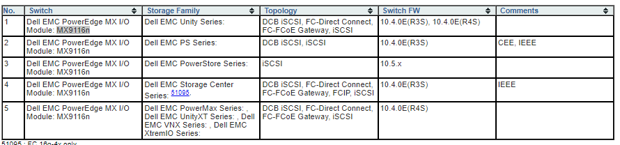

Migrating Storage Volumes to PowerStore
In my scenario I wanted to migrate storage from a Compellent attached with FC to a PowerStore attached to an MX7000 with an M9116n.
Note: This is only relevant for older devices in a FC or iSCSI configuration. For NAS you would use any NAS migration technique (rsync, DobiMigrate, etc)
- Migrating Storage Volumes to PowerStore
- MX7000 FC Topology
- Migrating from an Old Device
- Other Useful Resources
MX7000 FC Topology

Migrating from an Old Device
This video describes how the migration from an old device (like a Compellent) to a PowerStore works.
In general, on all effected devices, you must install a host plugin which comes with a multipath driver. Before the migration is complete, the host driver will direct all reads/writes to the old device and post migration you will use a cutover option which causes the reads/writes to be redirected to the PowerStore. There is an iSCSI connection between the PowerStore and the compellent which has a synchronization feature that will keep any updates made against the Compellent (or other older device) synced to the in progress copy to the PowerStore
Other Useful Resources
PowerStore Educational Videos
https://www.dell.com/support/kbdoc/en-us/000130110/powerstore-info-hub-product-documentation-videos
Operating Systems Compatible with Multipath Drivers
https://www.dell.com/support/kbdoc/en-us/000105896/powerstore-supported-host-os-for-non-disruptive-migration-of-storage-resources?lang=en
Requirements for Non-Disruptive Migration
https://www.dell.com/support/manuals/en-us/powerstore-1000t/pwrstr-import/additional-resources?guid=guid-f5b0a9d3-2eae-447c-b4c3-40e0927ac5f4&lang=en-us
M9116n Compatibility Matrix
